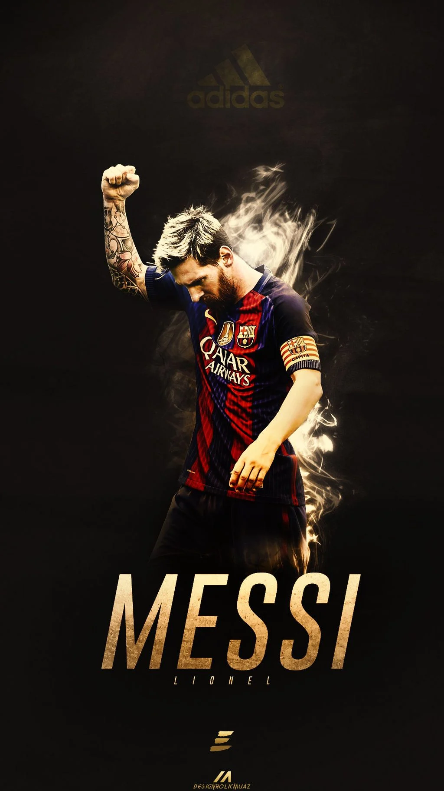
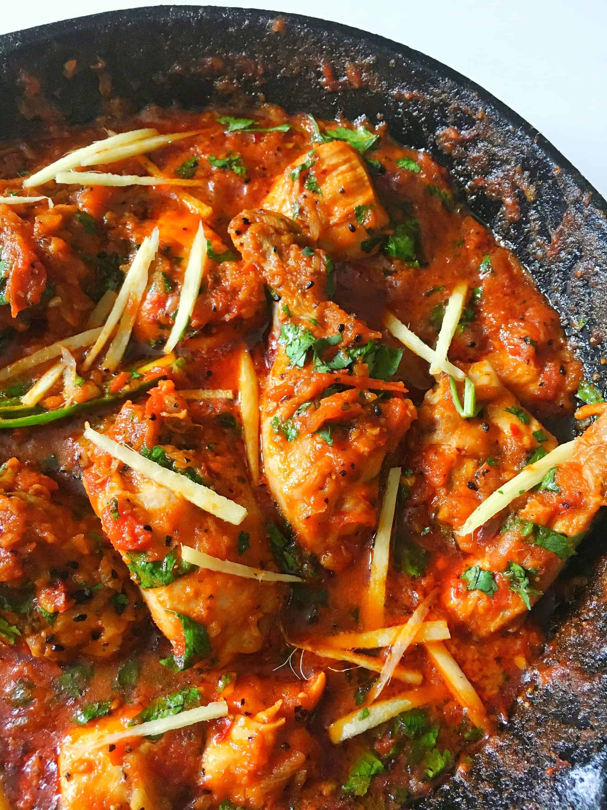

My Favourites
MESSI IS THE GOAT:

Messi stats:
Messi is the of the worlds best striker of all time!
- Champions. League. 2005/06 · 2008/09. 2010/11 · 2014/15.
- Laliga.2004/05 . 2005/06 . 2008/09.
- Most assits in the champions league.
- 7x Ballon d'Or.
- 2022 FIFA World Cup Chmapion..
Chicken kadahi:

Chicken Kadahi:
As a person from south east asia Chicken kadai is one of the most popular
food there.
Ingredients,
Firstly prepare kadai masala or use store bought kadahi masla or chiken
masla. You can make this ahead and store in a air tight jar for few
months. Here are the ingredients used:
- Naan
- Chicken
- butter
- You can serve it with some rice too.
-
Of course the hot sauce, and all the spices. Everything we eat we want
it to be spicy.
Mclaren Artura:
 Mclaren Artura:
Mclaren Artura:
Mclaren artura is one of my Favourite cars and as well as one of the
fastest cars in the world.
-
Double Wishbone Front & Multi-link Rear, Proactive Damping Control
- Electronically Locking Differential (E-Differential)
-
Carbon Ceramic Brakes with 6-Piston Aluminium Callipers Front and
4-Piston Aluminium Callipers Rear
- Horse power of 500 kW ( 680 ps; 671hp)